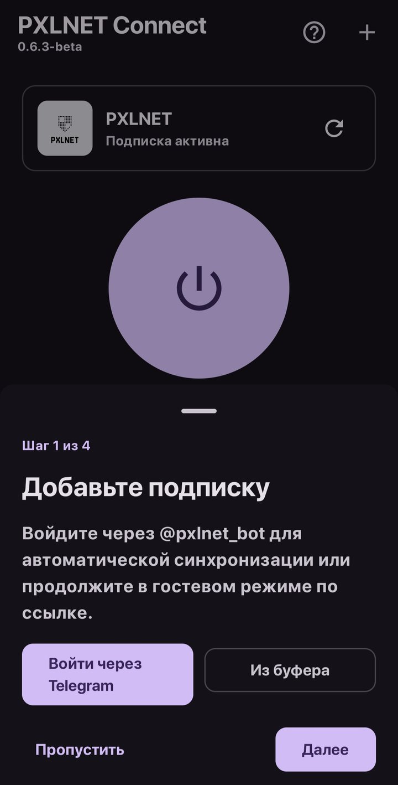
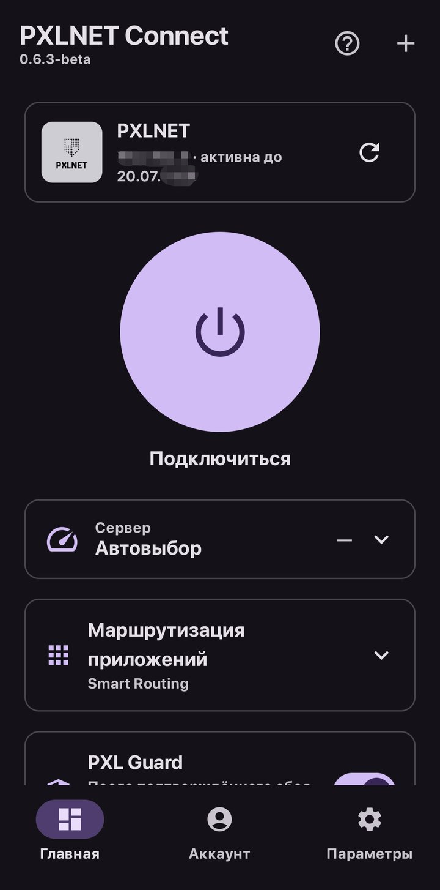
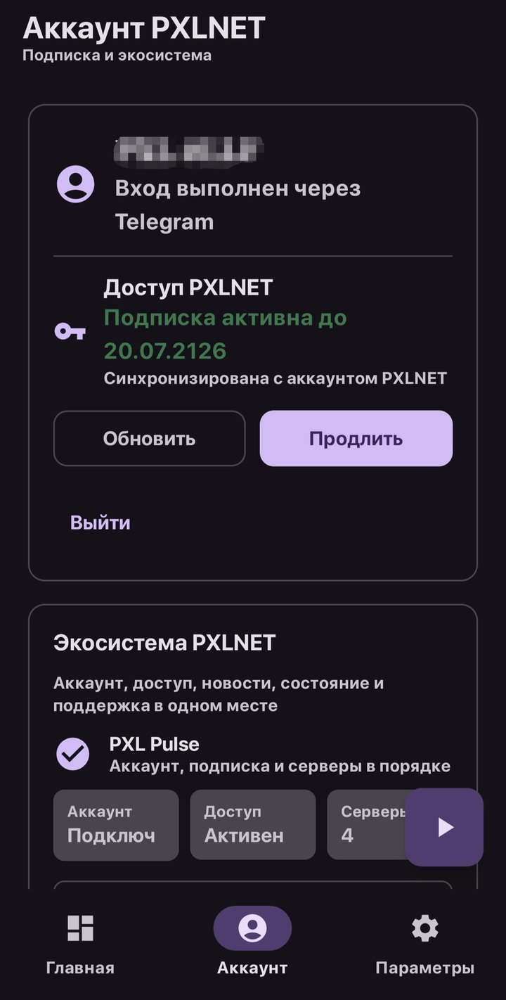
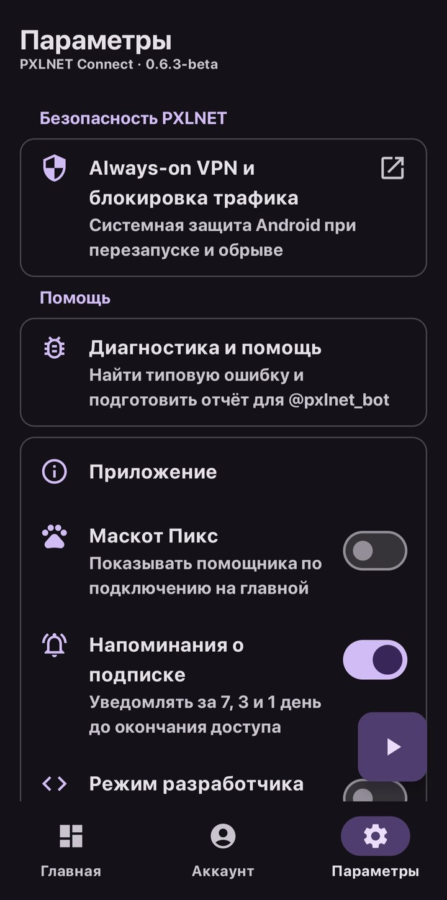

Smart Server
Автоматически выбирает подходящий сервер, ориентируясь на задержку и доступность.

Android-клиент PXLNet на базе sing-box
VLESS, Hysteria2, Smart Routing, автоматический выбор серверов и единый аккаунт PXLNet — всё в одном приложении.
PXLNet Connect берёт на себя выбор сервера, маршрутизацию трафика и контроль состояния — вручную настраивать почти ничего не нужно.
Автоматически выбирает подходящий сервер, ориентируясь на задержку и доступность.
Направляет трафик по правилам и оставляет локальные или нужные направления напрямую.
Поддержка современных протоколов подключения с упором на скорость и устойчивость.
Состояние серверов и задержка отображаются прямо в приложении в реальном времени.
Аккаунт, подписка, устройства и состояние сервисов — в одном интерфейсе.
Повторно проверяет сбои и автоматически переключает на доступный сервер.
Можно направить через VPN весь трафик устройства, довериться Smart Routing или выбрать приложения вручную — выбор сохраняется локально на устройстве.
Все подключения устройства идут через VPN — самый простой и предсказуемый режим.
Направляет трафик по правилам и оставляет локальные или нужные направления напрямую.
Через VPN идут только выбранные вами приложения — с поиском по списку и исключениями, которые хранятся локально на устройстве.
PXLNet Connect не скрывает наличие VPN от других приложений и не требует пароля — только то, что нужно для стабильной и прозрачной работы.
Отчёты об ошибках очищаются от UUID, токенов и адресов перед отправкой в поддержку — вручную и по вашему запросу.
Приложение не пытается спрятать факт подключения от других приложений или системы — работа остаётся прозрачной.
Авторизация через @pxlnet_bot в Telegram — без пароля и без токена внутри APK.
Одна подписка открывает доступ ко всем доступным серверам и основным функциям PXLNet Connect. Новые обычные функции и серверные локации не требуют покупки отдельных пакетов.
Для входа не обязательно заводить аккаунт — можно продолжить в гостевом режиме по ссылке подписки, а синхронизировать с аккаунтом PXLNet позже, через @pxlnet_bot.
Несколько экранов PXLNet Connect: подключение, аккаунт и параметры.




Так же, как устроен первый запуск в самом приложении — четыре шага, без лишних настроек.
Скачайте последнюю версию из GitHub Releases и установите на Android 11–16.
Войдите через @pxlnet_bot для автосинхронизации или продолжите в гостевом режиме по ссылке.
Оставьте автовыбор сервера и Smart Routing или настройте маршрутизацию приложений вручную.
Нажмите кнопку подключения — PXL Guard сам переключит сервер при сбое.
Актуальная сборка публикуется в GitHub Releases сразу после выхода.
Последний GitHub ReleaseОткройте GitHub ReleasesПерейдите по кнопке выше — вы попадёте на страницу с последней версией.
Скачайте APKЗагрузите файл релиза на устройство с Android 11–16.
Войдите в аккаунт PXLNetИспользуйте существующую подписку PXLNet — новая покупка не нужна.
PXLNet Connect — форк sing-box-for-android, вдохновлённый Happ Android, распространяется под лицензией GPLv3.
Исходный код, релизы и историю изменений можно посмотреть напрямую в репозитории.